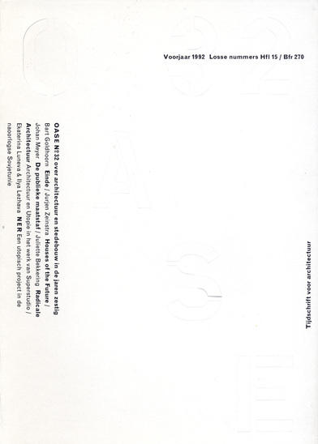
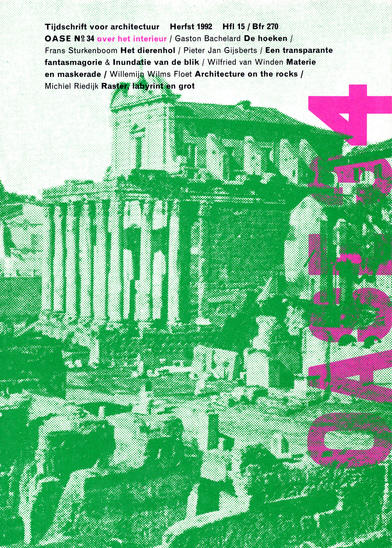
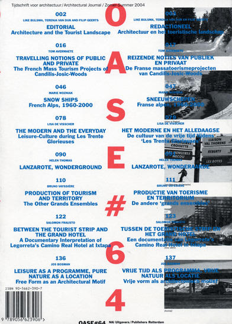
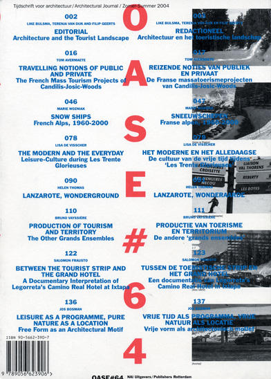
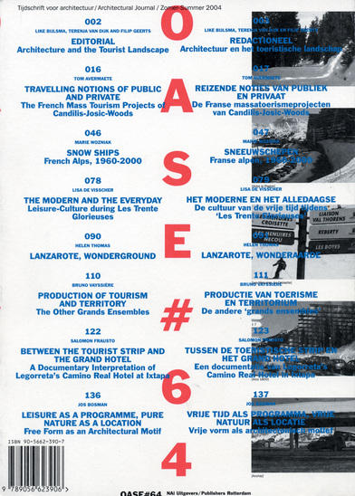

 


When did you start working on OASE magazine?
The first issue that I did was in 1990. Before it was a magazine of a different format, A4 size.
Did you suggested a new size?
Yes. The magazine has quite a theoretical approach, so used this book format. Before was just loose papers, where students would hand their type-written essays. It looked very nice, I liked it, but it was a bit problematic to continue this way, so I decided to change it.
And the change was using a book format rather then using a conventional magazine format?
There was a lot of text, and not so many images. It was easier to read in a new format.
What is the size of the OASE magazine? It is related to the maximum size of the sheet?
Yes, 24×17 cm it is the most economical size for the 50×70cm presses in the Netherlands. It is very economical, however, you cannot bleed on all sides. I have to adjust the design to this as well, so we move all the images up on the sheet.
When you started working on OASE did you design a fixed grid for the future issues?
For me the grid is an instrument that allows me to work with books. Very often it is a flexible grid so I am not too constrained, I still have to take decisions about placing text and images.
Has the grid changed since the first issue? How was the grid evolving as the magazine was growing up?
Yes, The 6×2 mm grid changed. When the production of OASE changed, and now we are doing it fully in-house, the grid changed. Now it is made completely on the Macintosh and this offers much more opportunities to play with columns, type and the margins.
I spent some time looking at OASE trying to follow the internal structure of the magazine. I had an impression that the grid is changing with every issue, as well as paper and typefaces. But those changes are so subtle that you don’t see them from issue to issue, you need to see a series them to compare the first one and the latest one and only then can one see the changes.
That’s true. As basic typefaces I am trying to stick with Monotype Grotesque and Janson, but there are exceptions. The grid is also changing when the format is changing [an issue on poetry and architecture has a different size]. The grid, and the division of the grid, depends on the complexity of the issue. The last two issues are bilingual, so I had to adapt the grid to accommodate more text. We are now doing an issue of OASE [issue 49] and we made the Dutch and the English text equal. This requires a change in grid too.
Did you add more pages when OASE became bilingual?
No, and that was the problem. The editor wanted to have the English translation, and asked me to put it in the back of the magazine. However, for me it was a nice opportunity to combine both languages, but they did not offer me more pages. The type was getting smaller and smaller.
So there is twice as much text now, but the same amount of pages?
[laughs] ...exactly...
It seems that you turn all the technical constrains and limitations to an advantage, and there is no visible aesthetic compromise in OASE, all the issues work well with all these limitations.
Limitations are an important thing in design in general because they offer solutions.
How did OASE change when you worked on it with your students? Before it was much more of your individual job, now, the latest issue you designed together with Stuart Bailey and Patrick Coppens. How did it affect the process?
There is not much difference. Of course now the work is much more of a dialogue, Stuart and Patrick have different visions, and this is their contribution to the magazine, but essentially there is not a big change. We are trying to make it a game. We are not doing these kind of commissions for money. As I mentioned it is very low-budget magazine. So my honorarium has to come from a nice result. For me it is important to be involved with architecture, a field that is very close to design, I enjoy reading all the articles. It is a free time job. I let the content decide how the magazine is going to look.
You’ve been working on OASE for 8 years. Do you see a direction in which the magazine is going, or is it hard to predict because it is so much driven by its content?
I don’t know. I approach it differently every time. You can see it on the OASE logos. There isn’t one. Each issue is treated individually. I am completely free in designing the magazine, it is an issue of trust between the publisher and us.
How much are you involved in making the editorial decisions?
Not so much, I am not as intellectual as the other people involved in the magazine...
... but you were very influential for the magazine, you always propose the covers, you suggested the bilingual solutions, you discuss the articles...
... of course, I read all the articles and talk about them, I choose the visuals, but I am not active in deciding about the future of OASE, this is not my worry.
When I saw OASE for the first time I thought it looked very Dutch. When I’ve seen later issues this feeling was only reaffirmed. What do you think makes it look and feel so Dutch?
That’s funny, I would also like to know...
Maybe it is the diversity of forms, this plurality that allows you to decide each time individually...
... yeah, perhaps... perhaps it is the flexibility of a small country. In big countries I see more constrains than here in the Netherlands. I don’t know.
OK, the last thing I’d like to ask, is a thing that all the people that know you want to ask but they don’t dare, and that’s the origin of your famous chinese-indigo blue jacket. Where does it come from?
[laughs] That’s not so special... I bought it first 15 years ago, I like it for all the pockets it has, and it is so light. I now buy them in Paris, last time I bought 3 of them...